|
|
Jump to the page in German language
|
| 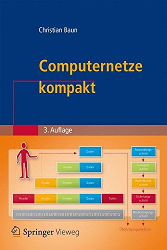 |
Computer networks allow to connect individual computers systems for communication and resource sharing. Communication via computer networks is realized via different protocols of different layers of reference models (OSI reference model, TCP/IP reference model, hybrid reference model). At the beginning of the course, an introduction to the required fundamentals of the computer sciences and computer networks takes place. Next, the protocols and their classification into established reference models is discussed. The main focus of the course is to explain the way, the data is transmitted through the different protocol layers and via different transmission media. The course (lectures, exercises and exam) is held in English language. All slide sets and exercise sheets are available in English and in German language. The content of the English and German slide sets and exercise sheets is identical. A list of technical terms provides this page. The slide sets are the basis for the third edition of the German-language book Computernetze kompakt, which was published in September 2015 by Springer Vieweg. ISBN: 978-3-662-46931-6 |
|
This page is outdated!
Updated and improved lecture materials can be found on the web page of the course Computer Networks in winter term 2016/2017. |
| Date | Time | Room | Event | Topics | |
|---|---|---|---|---|---|
| 15.10.2015 | 10:00-11:30 | 1-131 | Lecture | I3b | Discussion of slide set 1 (slides 1-30) |
| 19.10.2015 | 14:15-15:45 | 1-130 | Lecture | I3a/m | Discussion of slide set 1 (slides 1-32) |
| 22.10.2015 | 10:00-11:30 | 1-131 | Lecture | I3b | Discussion of slide set 1 (slides 31-56) |
| 26.10.2015 | 14:15-15:45 | 1-130 | Lecture | I3a/m | Discussion of slide set 1 (slides 33-65) |
| 29.10.2015 | 10:00-11:30 | 1-131 | Lecture | I3b | Discussion of slide set 1 (slides 57-77) and slide set 2 (slides 1-12) |
| 02.11.2015 | 14:15-15:45 | 1-130 | Lecture | I3a/m | Discussion of slide set 1 (slides 66-77) and slide set 2 (slides 1-22) |
| 05.11.2015 | 10:00-11:30 | 1-131 | Lecture | I3b | Discussion of slide set 2 (slides 13-44) |
| 09.11.2015 | 14:15-15:45 | 1-130 | Lecture | I3a/m | Discussion of slide set 2 (slides 23-55) |
| 12.11.2015 | 10:00-11:30 | 1-131 | Lecture | I3b | Discussion of slide set 2 (slides 45-55) and slide set 3 (slides 1-18) |
| 16.11.2015 | 14:15-15:45 | 1-130 | Lecture | I3a/m | Discussion of slide set 3 (all slides) |
| 19.11.2015 | 10:00-11:30 | 1-131 | Lecture | I3b | Discussion of slide set 3 (slides 19-41) and slide set 4 (slides 1-10) |
| 23.11.2015 | 14:15-15:45 | 1-130 | Lecture | I3a/m | Discussion of slide set 4 (all slides) and slide set 5 (slides 1-9) |
| 26.11.2015 | 10:00-11:30 | 1-131 | Lecture | I3b | Discussion of slide set 4 (slides 11-34) and slide set 5 (slides 1-16) |
| 30.11.2015 | 14:15-15:45 | 1-130 | Lecture | I3a/m | Discussion of slide set 5 (slides 10-55) |
| 03.12.2015 | 10:00-11:30 | 1-131 | Lecture | I3b | Discussion of slide set 5 (slides 17-55) and slide set 6 (slides 1-9) |
| 07.12.2015 | 14:15-15:45 | 1-130 | Lecture | I3a/m | Discussion of slide set 6 (all slides) |
| 10.12.2015 | 10:00-11:30 | 1-131 | Lecture | I3b | Discussion of slide set 6 (slides 10-37) and slide set 7 (slides 1-10) |
| 14.12.2015 | 14:15-15:45 | 1-130 | Lecture | I3a/m | Discussion of slide set 7 (all slides) |
| 17.12.2015 | 10:00-11:30 | 1-131 | Lecture | I3b | Discussion of slide set 7 (slides 11-46) |
| 21.12.2015 | Christmas break | ||||
| 24.12.2015 | Christmas break | ||||
| 28.12.2015 | Christmas break | ||||
| 31.12.2015 | Christmas break | ||||
| 04.01.2016 | Christmas break | ||||
| 07.01.2016 | Christmas break | ||||
| 11.01.2016 | 14:15-15:45 | 1-130 | Lecture | I3a/m | Discussion of slide set 8 (slides 1-48) |
| 14.01.2016 | 10:00-11:30 | 1-131 | Lecture | I3b | Discussion of slide set 8 (slides 1-48) |
| 18.01.2016 | 14:15-15:45 | 1-130 | Lecture | I3a/m | Discussion of slide set 8 (slides 49-60) and slide set 9 (slides 1-15) |
| 21.01.2016 | 10:00-11:30 | 1-131 | Lecture | I3b | Discussion of slide set 8 (slides 49-60) and slide set 9 (slides 1-15) |
| 25.01.2016 | 14:15-15:45 | 1-130 | Lecture | I3a/m | Discussion of slide set 9 (slides 16-57) |
| 28.01.2016 | 10:00-11:30 | 1-131 | Lecture | I3b | Discussion of slide set 9 (slides 16-57) |
| 01.02.2016 | 14:15-15:45 | 1-130 | Lecture | I3a/m | Discussion of slide set 10 (all slides) |
| 04.02.2016 | 10:00-11:30 | 1-131 | Lecture | I3b | Discussion of slide set 10 (all slides) |
| 08.02.2016 | 14:15-15:45 | 1-130 | Q&A | I3a/m | Q&A session |
| 11.02.2016 | 10:00-11:30 | 1-131 | Q&A | I3b | Q&A session |
| 26.02.2016 | 10:00-11:30 | 4-8 | Exam | I3a/b/m | The exam covers all discussed slide sets and exercise sheets |
| 10.06.2016 | 10:00-11:30 | BCN 421 | Exam | I3a/b/m | The exam covers all discussed slide sets and exercise sheets |
| Topics | |
|---|---|
| Slide set 1 | Organisational information, fundamentals of computer networks, protocols and reference models |
| Slide set 2 | Physical layer (part 1) |
| Slide set 3 | Physical layer (part 2) |
| Slide set 4 | Data Link layer (part 1) |
| Slide set 5 | Data Link layer (part 2) |
| Slide set 6 | Data Link layer (part 3) |
| Slide set 7 | Network layer (part 1) |
| Slide set 8 | Network layer (part 2) |
| Slide set 9 | Transport layer |
| Slide set 10 | Application layer |
| Slide set 11 | Cryptography (fundamentals, symmetric key cryptography) |
| Slide set 12 | Cryptography (asymmetric key cryptography, key exchange, hash functions) |
| Slide set 13 | Steganography, copyright traps and digital watermarking |
| Topics | |
|---|---|
| Exercise sheet 1 | Topics of slide set 1 |
| Exercise sheet 2 | Topics of slide set 2 + 3 |
| Exercise sheet 3 | Topics of slide set 4 + 5 + 6 |
| Exercise sheet 4 | Topics of slide set 7 + 8 |
| Exercise sheet 5 | Topics of slide set 9 + 10 |
| Exercise sheet 6 | Topics of slide set 11 + 12 + 13 |
| Semester | Exams | Time limit | University | Sample solutions | ||
|---|---|---|---|---|---|---|
| SS2016 | 90 Minuten | Frankfurt UAS | ||||
| WS1516 | 90 Minutes | Frankfurt UAS | ||||
| SS2015 | 90 Minutes | Frankfurt UAS | ||||
| WS1415 | 90 Minutes | FH Frankfurt | ||||
| SS2014 | 90 Minutes | FH Frankfurt | ||||
| WS1314 | 90 Minutes | FH Frankfurt | ||||
| SS2012 | 90 Minutes | HS Darmstadt | ||||
| Result of the course evaluation |
As auxiliary material, the students were allowed to use a self prepared, single sided DIN-A4 sheet in the exam. Only handwritten originals were allowed, but no copies. This page contains a selection of the sheets. Some of them are true works of art.
 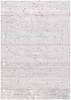
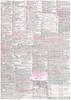
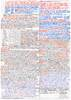
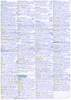
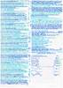
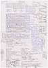
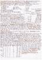
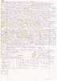
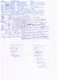
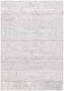
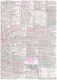
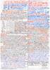
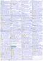
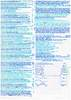
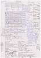
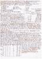
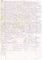
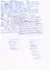
The best way to reach me is via email: christianbaun@fb2.fra-uas.de
|
Prof. Dr. Christian Baun Frankfurt University of Applied Sciences (1971-2014: Fachhochschule Frankfurt am Main) Faculty of Computer Science and Engineering Last updated: July 27th 2016 |
|
|